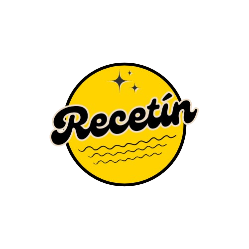

<ion-app>

  <div class="ion-page" id="main-content">
    <ion-header>
      <ion-toolbar>
       
        <div class="hcs">
          
          
        </div>
      </ion-toolbar>
    </ion-header>

    <ion-content class="ion-no-padding">
      <ion-toolbar>
        <ion-segment value="todo">
          <ion-segment-button value="todo">
            <ion-label>Todo</ion-label>
          </ion-segment-button>
          <ion-segment-button value="categorías">
            <ion-label>Categorías</ion-label>
          </ion-segment-button>
        </ion-segment>
      </ion-toolbar>
      
      <ion-searchbar show-clear-button="focus" value="Buscar"></ion-searchbar>

      <!-- Cartas de Recetas de Otros Usuarios -->
      <ion-card *ngFor="let receta of recetas" (click)="openModal(receta)">
        
        <ion-card-header>
          <ion-card-title>{{ receta.nombre }}</ion-card-title>
          <ion-card-subtitle color="warning">{{ receta.tipo }}</ion-card-subtitle>
        </ion-card-header>
        <ion-card-content>
          {{ receta.descripcion }}
        </ion-card-content>
      </ion-card>
    </ion-content>

    <ion-footer>
      <ion-buttons slot="start">
        <ion-back-button color="dark" defaultHref="/home"></ion-back-button>
      </ion-buttons>
    </ion-footer>
  </div>

  <!-- Modal de Receta -->
  <ion-modal #modalReceta [isOpen]="isModalOpen" (didDismiss)="closeModal()">
    <ion-header>
      <ion-toolbar>
        <ion-title>{{ selectedReceta?.nombre }}</ion-title>
        <ion-buttons slot="end">
          <ion-button (click)="closeModal()">Cerrar</ion-button> 
        </ion-buttons>
      </ion-toolbar>
    </ion-header>
    <ion-content>
      <div *ngIf="selectedReceta">
        <ion-content>
        
        
        </ion-content>
        <ion-card-header>
          <ion-card-subtitle color="warning">{{ selectedReceta.tipo }}</ion-card-subtitle>
        </ion-card-header>
        <ion-card-content>
          <p>{{ selectedReceta.descripcion }}</p>
          <h4>Ingredientes:</h4>
          <ul>
            <li *ngFor="let ingrediente of selectedReceta.ingredientes">{{ ingrediente }}</li>
          </ul>
          <h4>Pasos:</h4>
          <ol>
            <li *ngFor="let paso of selectedReceta.pasos">{{ paso }}</li>
          </ol>
        </ion-card-content>
        <ion-buttons slot="end">
          <ion-button expand="full" (click)="closeModal()">Cerrar</ion-button> <!-- Botón de cierre en el footer -->
        </ion-buttons>
      </div>
    </ion-content>
    
    
  </ion-modal>
  </ion-app>
  
